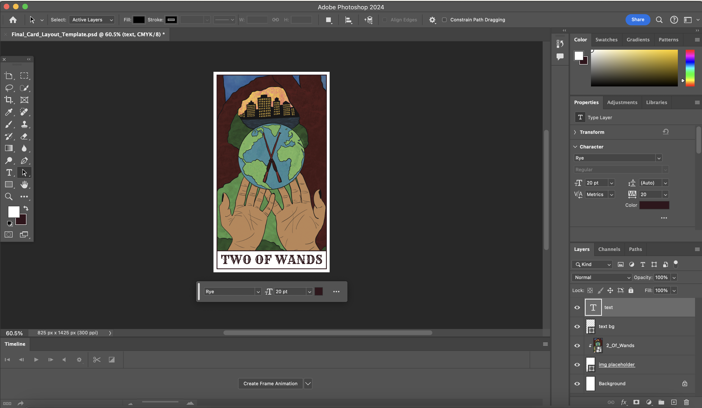

Thesis Weekly Update #5
February 26, 2024: Demo Day prep
Progress Updates
This week, I’ve been continuing to draw out more cards to have Cards 1-10 from each Minor Arcana suit. I’ve been plugging them into Photoshop to reformat. I’m incorporating feedback from our past group crit and am writing out the full names of each card at the bottom. I’ve also heard back from local printing companies in Brooklyn and am having cards print in 350gsm paper with coating. In addition, I’m hoping to add a back print to be as close to the ideal card as possible, but this will depend on print turnaround times for Demo Day.
I am writing out the narratives for my completed card through InDesign. I’m focusing on a short paragraph description that prioritizes the image interpretation of the card. I’m considering adding notes of linked cards, such as astrological and numerological similarities. However, I’m not sure if that would be very helpful at a beginner level. An alternative idea I have is making a list of questions for each card that the reader can consider when that card comes up in a pull or layout. I plan to have this booklet professionally printed at Staples.
I think the biggest challenge will be the experience design component during Demo Day. I want to pilot having two audience members work together as querent and reader. The challenge is incentivizing visitors to do so, especially when many people aren’t familiar with Tarot. I think this is the best way to have an audience meaningfully engage with the material, but I’m wondering if it’d be a good idea to present the cards an alternative way. I’m open to feedback!


Print - Photoshop Export Settings
File > Save a Copy > Format: JPEG > Image Quality: 10 Maximum > OK